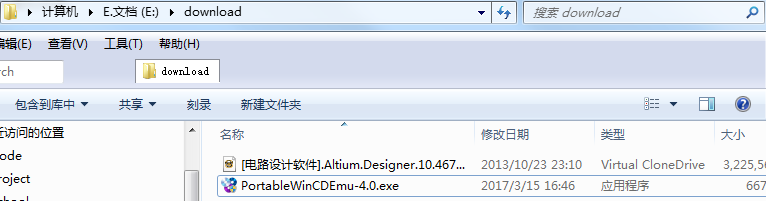
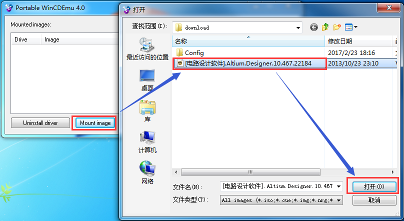

Altium Designer(简称"AD")，是一款一体化的电子电路设计开发系统，主要运行于Windows操作系统。这套软件将原理图设计、电路仿真、PCB绘制编辑、拓扑逻辑自动布线、信号完整性分析和设计输出等技术完美融合，提供了一种全新的电子电路自动化设计解决方案。熟练使用这一软件将提升电路设计的质量和效率。
1.1使用百度网盘客户端下载Altium Designer ISO镜像文件。
1.2下载虚拟光驱应用程序。
准备完成后，文件夹状态截图如下所示：

2.1使用虚拟光驱应用程序，加载Altium Designer ISO镜像文件。

2.2此时，计算机中，会出现一个虚拟光驱磁盘，内容为Altium Designer安装文件。
2.3双击虚拟光驱磁盘中的"AltiumInstaller.exe"文件，即可开始下一步安装工作。
3.1安装目录需为英文或数字，不能为中文。
3.2安装时间较长，需耐心等待。
3.3运行"AltiumInstaller.exe"文件，启动Altium Designer安装过程。
3.4参考安装过程如下所示：
4.1 安装完成后，若未获得许可，将不能进行新建文件等操作。
4.2 首先打开虚拟光驱磁盘中的"Crack"目录,将其中的文件，复制和替换至Altium Designer的安装路径中。
4.3 然后打开安装好的Altium Designer应用程序"DXP.EXE",将许可证文件添加至系统中。
4.4 参考许可过程如下所示：
5.1 打开Altium Designer应用软件，点击左上脚"DXP--Preferences"菜单。
5.2 在弹出的对话框中，选中"Localization--Use localized resources"选项。
5.3 根据提示，确定后，重新启动Altium Designer应用软件后，软件菜单即更改为中文。